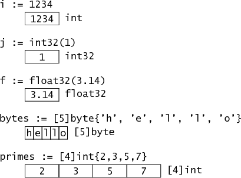
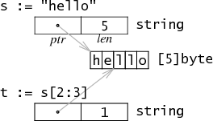

slices
Links
- Arrays, slices (and strings): The mechanics of 'append'
- Go Slices: usage and internals
- Go Data Structures
- "Slice Tricks" Wiki page
questions that must be answered
- fixed-size or variable-size?
- is the size part of the type?
- what do multidimensional arrays look like?
- does the empty array have meaning?
整理
基本类型在内存中的结构

结构和指針
结构的字段(fields)在内存中也是连续的.如果字段是指针,那么它就是指针.
type Rect1 struct { Min, Max Point }
type Rect2 struct { Min, Max *Point }

Arrays 数组
数组是定长的,长度是类型的一部分. 不同的长度就是不同的类型.比如,[256]byte [512]byte是不同的类型.
数组在内存中就是固定长度的连续的块.
切片 和 切片头 Slices: The slice header
直觉上切片就是变长数组的样子.本质上不是,本质上切片一种描述数组片段的数据结构
它的数据结构本身完全不是数组的样子,完完全全是另一种东西.
它的数据结构包含字段: 长度, 容量, 0元素指针
这是它的类型定义:
type sliceHeader struct {
Length int
Capacity int
ZerothElement *byte
}
它在内存中的样子:

另一组图:

make([]byte, 5)后:

s = s[2:4]后:

s = s[:cap(s)]后:

需要知道的是,0元素指针往前移了,就不能回头了
那么为什么不设计成可以回头呢?
传值还是传指针給函数
基本思想就是,对于以传值方式来工作的语言,在函数内部对值本身所作的修改,出了函数就不作数的,因为它是值的一个副本.但可以把这个值通过return返回.
但在函数内,传入指针后,对指针所指向的内容作修改,是会影响到函数外的世界的.
对于切片来説,传值給函数后,修改元素的值马上生效,修改切片本身需要return.
new and make
new(T) returns a *T, make(T, args) returns an ordinary T.

strings
字符串就是只读切片,就是切片没有了容量字段.

扩容切片 copy and append
直觉上会觉得容量等于底层数组的长度,但其实容量是等于底层数组的长度减去切片0元素在数组上的索引.(我总是纠结算这种加减法到底要不要减一或加一的问题,完全没有办法弄清楚)
普世的扩容思路都一样,创建一个新的大的切片,然后把旧的复制过来.再賦值給旧的变量名,这个时候底层数组已经是另外一条了.成本还是很高的.
利用内建函数copy扩容:
t := make([]byte, len(s), (cap(s)+1)*2) // +1 in case cap(s) == 0
copy(t, s)
s = t
利用内建函数append扩容:
- b... means "expand b"
- ...T means "0+ of T"
func append(s []T, x ...T) []T
a := []string{"John", "Paul"}
b := []string{"George", "Ringo", "Pete"}
a = append(a, b...) // equivalent to "append(a, b[0], b[1], b[2])"
// a == []string{"John", "Paul", "George", "Ringo", "Pete"}
要注意的gotcha
切片的好处就是不用经常分配新内存,那么潜在的问题就是当你切完之后只需要很小的一部分数据,内存里的仍然是原来的大块的所有数据. 解决办法就像扩容那样,创建一个新的小的切片,把旧的数据复制过来,再返回结果.
Nil
理解不了哦:
sliceHeader{
Length: 0,
Capacity: 0,
ZerothElement: nil,
}
or just
sliceHeader{}
The key detail is that the element pointer is nil too. The slice created by
array[0:0]
has length zero (and maybe even capacity zero) but its pointer is not nil, so it is not a nil slice.
//这句話是想説啥?
As should be clear, an empty slice can grow (assuming it has non-zero capacity), but a nil slice has no array to put values in and can never grow to hold even one element.
That said, a nil slice is functionally equivalent to a zero-length slice, even though it points to nothing. It has length zero and can be appended to, with allocation.
Conclusion
切片头变来变去,底层数组恒久远.
深入了解 copy 和 append
// append
a = append(a, b...)
// copy
b = make([]T, len(a))
copy(b, a)
// or
b = append([]T(nil), a...)
// cut
// 意外不意外,用append实现了cut
// 更让我意外的是,这个cut掉的是a[i:j-1]这一段,而不是a[i-1:j-1]这一段
// 因为a[i:j]是左闭右开的,意思是from i til j, 也就是x >= i && x < j
// 所以a[0:0]是不包含a[0]的
a = append(a[:i], a[j:]...)
// delete
a = append(a[:i], a[i+1:]...)
// or
a = a[:i+copy(a[i:], a[i+1:])]
// Delete without preserving order
a[i] = a[len(a)-1]
a = a[:len(a)-1]
// NOTE If the type of the element is a pointer or a struct with pointer fields, which need to be garbage collected, the above implementations of Cut and Delete have a potential memory leak problem: some elements with values are still referenced by slice a and thus can not be collected. The following code can fix this problem:
// Cut
copy(a[i:], a[j:])
for k, n := len(a)-j+i, len(a); k < n; k++ {
a[k] = nil // or the zero value of T
}
a = a[:len(a)-j+i]
// Delete
copy(a[i:], a[i+1:])
a[len(a)-1] = nil // or the zero value of T
a = a[:len(a)-1]
// Delete without preserving order
a[i] = a[len(a)-1]
a[len(a)-1] = nil
a = a[:len(a)-1]
// Expand
a = append(a[:i], append(make([]T, j), a[i:]...)...)
// Extend
a = append(a, make([]T, j)...)
// Insert
s = append(s, 0)
copy(s[i+1:], s[i:])
s[i] = x
// Pop/Shift
x, a = a[0], a[1:]
// Pop Back
x, a = a[len(a)-1], a[:len(a)-1]
// Push
a = append(a, x)
// Push Front/Unshift
a = append([]T{x}, a...)
// Filtering without allocating
// This trick uses the fact that a slice shares the same backing array and capacity as the original, so the storage is reused for the filtered slice. Of course, the original contents are modified.
b := a[:0]
for _, x := range a {
if f(x) {
b = append(b, x)
}
}
// Reversing
// To replace the contents of a slice with the same elements but in reverse order:
for i := len(a)/2-1; i >= 0; i-- {
opp := len(a)-1-i
a[i], a[opp] = a[opp], a[i]
}
// The same thing, except with two indices:
for left, right := 0, len(a)-1; left < right; left, right = left+1, right-1 {
a[left], a[right] = a[right], a[left]
}
// Shuffling
// Fisher–Yates algorithm:
for i := len(a) - 1; i > 0; i-- {
j := rand.Intn(i + 1)
a[i], a[j] = a[j], a[i]
}